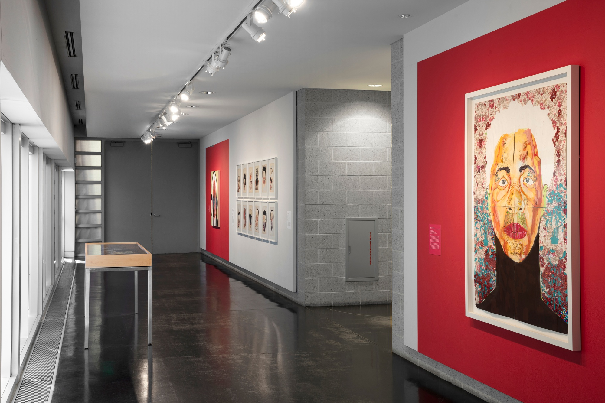

Serious Sparkle
Tang Teaching Museum • Saratoga Springs, NY
August 10, 2019–January 5, 2020
Rendered on attire, craft, and everyday items, glitter is a powerful identity marker and tool for establishing presence and visibility. Like a diamond, glitter dazzles and sparkles, captivating the eye by reflecting, refracting, and dispersing light. Yet glitter costs next to nothing and exists in abundance. It is bold and bright, and it does not go away.
The artists brought together in this exhibition use glitter, and more broadly, techniques of embellishment and ornamentation, to explore issues around identity. Their work draws on varied histories of decoration and self-fashioning, from feminist art and the Pattern and Decoration movement to Caribbean and diasporic traditions of adornment, performance, and display. Through these materials and strategies, the artists address inequalities, construct or queer gender, and create cross-cultural exchange.
The layers, textures, and embellished surfaces convey beauty and excess, but there is also ugliness and violence. The fantasy, seduction, and sweetness of a shimmering surface are contrasted with scenes of bloodshed and disease. Across these works, glitter functions as disruption or interference, adding depth or redirecting the eye across a surface.
What emerges are new ways of envisioning power—a future filled with a little more edge, a little more sparkle.
- Chitra Ganesh
- Carrie Moyer
- Wangechi Mutu
- Ebony G. Patterson
- Alisa Sikelianos-Carter
